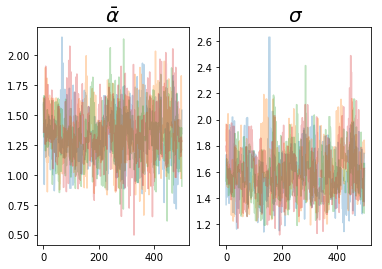
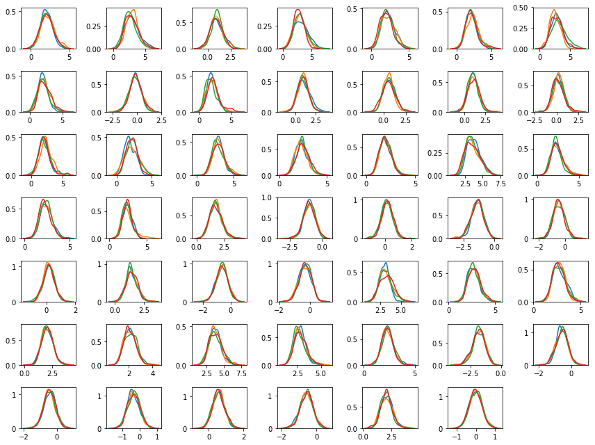
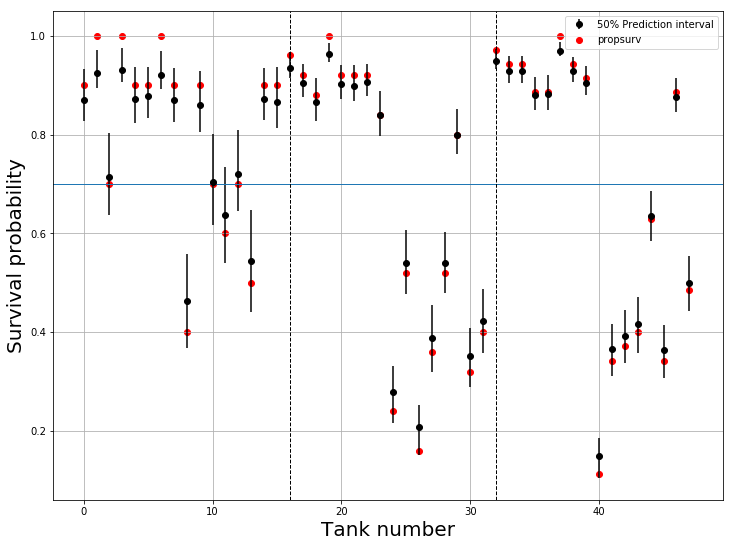
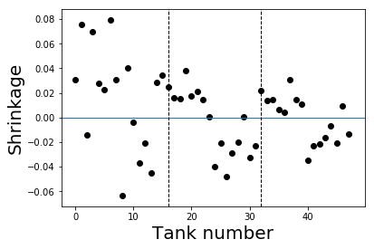

A Tutorial on Varying Intercepts Models with TensorFlow Probability
Intro
This post is about building varying intercepts models using TensorFlow Probability (“TFP”). It’s basically my attempt to translate Sigrid Keydana’s wonderful blog post from R to Python. I’m doing this for a couple of reasons: First, I’ve played with TFP before, was quite impressed by its performance and flexibility, and wanted to learn more about it; Second, I wanted to start blogging, and this seemed like an easy start; Last, TFP is rather new, and there aren’t a whole lot of resources and tutorials about it - so this might even prove useful to someone, someday.
Sigrid dedicated her post to Richard McElreath and his book; I’d like to join her on that. I was looking for a good introduction to Bayesian stats for quite some time. BDA3 was too technical for me at that point, Kruschke’s was excellent but didn’t really dive into the more sophisticated topics I wanted to learn. Statistical Rethinking was spot on - interesting, fun to read, and super helpful. It’s very code-oriented, and has already been re-written in pure stan, brms, pymc3, julia and probably many others.
Stats-wise, this post is going to be about varying intercepts models, which are perhaps the simplest kind of a multilevel model. The main idea behind them - called partial pooling - is simple and beautiful, but here I want to focus on the code, not the stats; for a nice introductory demo, check out this beautiful visualization, or this one. Better yet, get a copy of Statistical Rethinking and read the original. :-)
The data
We’re given data about 48 different tanks containing tadpoles (pre-frogs). Each tank has a density (the initial number of tadpoles in it), a categorical feature pred (whether the tank contained a predator or not), a categorical feature size (big tank or small tank), the number of surviving tadpoles surv and the proportion of surviving tadpoles propsurv (which is simply surv/density). The original data came with the book’s R package; Luckily, it’s hosted in Osvaldo Martin’s repo:
import pandas as pd
df = pd.read_csv("https://raw.githubusercontent.com/aloctavodia/Statistical-Rethinking-with-Python-and-PyMC3/master/Data/reedfrogs.csv")
df.head()
| Tank | density | pred | size | surv | propsurv |
|---|---|---|---|---|---|
| 0 | 10 | no | big | 9 | 0.9 |
| 1 | 10 | no | big | 10 | 1.0 |
| 2 | 10 | no | big | 7 | 0.7 |
| 3 | 10 | no | big | 10 | 1.0 |
| 4 | 10 | no | small | 9 | 0.9 |
Tank densities are either 10, 25 or 35.
The model
Our goal is to compute the probability of survival in each of the tanks. propsurv is one way to do this, which is straightforward and intuitive - simply compute the per-tank ratio of surviving tadpoles. But this doesn’t make much sense, especially if you consider the small sample sizes - if I’d give you a tank with density=1, would you feel comfortable with saying that the probability of survival is either 0% (surv=0) or 100% (surv=1)? Probably not.
A different approach would be to ignore between-tanks variations, and assume all tanks have exactly the same probability of survival. Our best estimate is then the ratio of all the surviving tadpoles (in all tanks, combined) - or sum(surv)/sum(density).
A varying intercept model is somewhat in between - it assumes each tank has its own probability of survival, but that all these probabilities are coming from some distribution over “probabilities of survival”. This is how it looks like:
$$
\begin{align}
\bar{\alpha} & \sim \text{Normal}(0,1.5) \\
\sigma & \sim \text{Exponential}(1) \\
\text{logit}\left(p_i\right) & \sim \text{Normal}\left(\bar{\alpha},\sigma\right) \\
s_i & \sim \text{Binomial}(n_i,p_i) \\
\end{align}
$$
What’s all this? In short - we assume the logits of the survival probabilities are sampled from some normal distribution, whose parameters (often called “hyperparameters”) we’re trying to infer. a_bar is the mean of this normal distribution, and we put a generic weakly informative prior on it - normal(0,1.5). sigma is the standard deviation of this normal distribution, and we put an exponential prior on it. After sampling these two numbers, we plug them into the logits distribution, sample 48 different logit values, transform them to probabilities and sample 48 survival predictions from the binomial distributions (one per tank). Now to the code itself. We begin with the necessary imports:
import tensorflow as tf
import tensorflow_probability as tfp
import seaborn as sns
import matplotlib.pyplot as plt
import numpy as np
tfd = tfp.distributions
For ease-of-use, we’re using TensorFlow in Eager mode, which allows a more interactive and iterative workflow.
tf.compat.v1.enable_eager_execution()
Some TFP’s pre-requisites
Before we start implementing the model itself, we need to cover some of the basic terminology around a TensorFlow Distribution. For the purposes of this introductory post, you can think of a distribution as an object with the following two methods:
sample()log_prob()
Both are pretty straightforward - sample() allows you to generate samples from a given distribution; log_prob() allows you to calculate the log-probability of a given value(s). There are other methods, of course, but these are the important ones for us.
There are two more attributes we need to mention:
event_shapebatch_shape
These were, at least for me, quite confusing (despite their pretty good docs). event_shape is the simpler of the two - if I have some joint probability distribution over N random variables, its event_shape is N. For example, a bivariate gaussian would have an event shape of 2.
batch_shape is trickier: TFP allows you to create a single Distribution object, which actually contains multiple, independent distributions. For example, tfd.Bernoulli(probs=[.3, .5, .7]) is a Distribution object composed of 3 different Bernoulli random variables (RVs) with probabilities of success .3, .5 and .7. The number of the independent distributions contained in this single object is its batch_shape. Why do this? My best guess is that it gives TFP the ability to make use of the underlying TF infrastructure, in which batching (and broadcasting along a batch dimension) is a fundamental operation. We’ll get back to this in the code below.
Now we’ll go ahead and define the model itself using TFP’s JointDistributionSequential API:
m = tfd.JointDistributionSequential(
[
tfd.Normal(loc=0, scale=1.5),
tfd.Exponential(rate=1.),
lambda sigma, a_bar: tfd.Sample(tfd.Normal(loc=a_bar, scale=sigma),sample_shape=[df.shape[0]]),
lambda l: tfd.Independent(tfd.Binomial(total_count=df.density.astype('float32'), logits=l),
reinterpreted_batch_ndims=1)
]
)
The main workhorse here is tfd.JointDistributionSequential, which is very similar to Sequential in Keras or PyTorch. It’s an object composed of list of Distribution-making functions (tfd.Distributions or Python callables that return a tfd.Distribution). The idea of sequentially stacking distributions, and adding the dependencies between them (the fact that the values sampled from tfd.Normal and tfd.Exponential are ‘fed’ into the 3rd distribution as its mean and standard deviation) is simple and intuitive, and fits nicely in the hierarchical modeling workflow; the code above is basically a 1-to-1 translation of the model specification.
The tricky parts here are TFP’s Sample and Independent. What are these, then?
Sample- The third function receives the hyper-parameterssigmaanda_bar, and should return one number per tank, drawn from anormal(a_bar,sigma).tfd.Sampleallows us to draw samples from the product distribution of all these 48 Gaussians; each sample fromSampleis a vector of 48 (uncorrelated) numbers, all with the same meana_barand standard deviationsigma.Independent- the third distribution returns a vector of 48 numbers. If we simply writetfd.Binomial(total_count=df.density.astype('float32'), logits=l), we’ll get a distribution with abatch_shapeof 48 and anevent_shape(), representing a scalar output. Wrapping this withtfd.Independenttransforms this output to be ofbatch_shape() andevent_shape48, representing a vector output, like we want it to be.
Another possibly-confusing issue here is the order of the parameters in the lambda expressions. The first parameter is the output of the previous distribution in the list, the second parameter is the output of the previous-previous distribution, etc… This is why they third distribution gets sigma before a_bar despite the fact sigma is defined after a_bar.
I found this API somewhat different than the “natural” way to think about the problem; however, if this ends up with superior performance, it’s probably worth the learning curve for a wide enough range of problems.
Sampling from a model
The model’s sample() method gets a sample_shape argument which determines the shape of the generated sample. This, in turn, will be used to tell the MCMC sampler how many chains to run in parallel.
n_chains = 4
initial_a, initial_s, initial_logits, init_surv = m.sample(n_chains)
Since we’ve asked for 4 chains, m.sample() returns 4 samples from the a_bar hyperprior and 4 samples from the sigma hyperprior; these, in turn, generate 4 new normal distributions, from which we sample 4x48 logit values. These values are then “pushed forward”, generating 4x48 samples from the binomial survival distributions. These survival predictions can (and probably should) be used to perform prior predictive checks, but we don’t need them to define the sampler, itself.
initial_a.shape, initial_s.shape, initial_logits.shape, init_surv.shape
(TensorShape([Dimension(4)]),
TensorShape([Dimension(4)]),
TensorShape([Dimension(4), Dimension(48)]),
TensorShape([Dimension(4), Dimension(48)]))
Now we create the sampler object. This step is composed of 3 different TFP objects. The first is the Hamiltonian Monte Carlo transition kernel, which uses the model’s .log_prob() function:
inner_kernel=tfp.mcmc.HamiltonianMonteCarlo(
target_log_prob_fn = lambda x,y,z : m.log_prob([x,y,z,df.surv.astype('float32')]),
step_size=0.1,
num_leapfrog_steps=3
)
Note that we’re not using the model’s .log_prob() as is; instead, we make sure that the log-probability is always computed with respect to the actual, observed survival data. This is the purpose of the lambda function above. For the other two required parameters, I’m using the ones from Sigrid’s post.
The second part is the SimpleStepSizeAdaptation object, which takes the kernel defined above and returns a new kernel with dynamic step size adaptation:
kernel = tfp.mcmc.SimpleStepSizeAdaptation(
inner_kernel=inner_kernel,
target_accept_prob = 0.8,
num_adaptation_steps = 500
)
Lastly, the sampling function. This object takes as input the initial states (and through them, number of chains to run), number of burnin steps, number of steps to run after burnin, a kernel (our augmented HMC kernel), and a trace function, which determines what kind of intermediate results we want to save. After sampling ends (this can take a while, depending on the complexity of your model), the function returns the samples (and traced results). Here I’ve decided not to save intermediate results, at all; the simple diagnostics I’m interested in can be computed from the samples themselves.
a_bars, sigmas, logits = tfp.mcmc.sample_chain(
current_state=[
tf.zeros_like(initial_a),
tf.ones_like(initial_s),
initial_logits
],
num_results=500,
num_burnin_steps=500,
kernel=kernel,
trace_fn=None
)
Let’s have a look at the output shapes:
a_bars.shape, sigmas.shape, logits.shape
(TensorShape([Dimension(500), Dimension(4)]),
TensorShape([Dimension(500), Dimension(4)]),
TensorShape([Dimension(500), Dimension(4), Dimension(48)]))
The sampler returned 500 samples per chain per parameter - exactly what we want.
TFP provides standard MCMC diagnostics, such as effective sample size per logit parameter (we average over chains):
tf.reduce_mean(tfp.mcmc.effective_sample_size(logits),axis=0)
<tf.Tensor: id=1643926, shape=(48,), dtype=float32, numpy=
array([ 39.01448 , 27.656044, 64.033554, 23.641933, 38.67304 ,
43.81818 , 27.42485 , 56.60047 , 86.46597 , 53.400955,
62.463234, 68.98154 , 71.84833 , 85.98772 , 53.90014 ,
45.368874, 57.142807, 64.70456 , 80.501144, 30.96955 ,
51.123882, 90.971016, 83.67827 , 133.95776 , 147.53087 ,
237.56706 , 124.73306 , 213.96054 , 255.63586 , 127.86496 ,
169.16728 , 222.58665 , 57.26799 , 62.313004, 59.934887,
140.44281 , 126.62906 , 44.229973, 80.57881 , 100.344055,
102.71631 , 307.0775 , 298.0421 , 298.77765 , 275.2672 ,
241.8357 , 134.39154 , 334.7177 ], dtype=float32)>
And R-hat values:
tfp.mcmc.potential_scale_reduction(logits)
<tf.Tensor: id=1643986, shape=(48,), dtype=float32, numpy=
array([1.0393666, 1.0419586, 1.014595 , 1.0326122, 1.0066991, 1.0365033,
1.1032237, 1.0193528, 1.0026469, 1.03286 , 1.0212902, 1.0046616,
1.0046593, 1.0190336, 1.0491707, 1.0185002, 1.0236404, 1.0240865,
1.0135043, 1.0091226, 1.0240618, 1.0212263, 1.0040884, 1.0057993,
1.0115193, 1.0074626, 1.0053723, 1.0013644, 1.0038955, 1.0128344,
1.0199273, 1.0040274, 1.1276014, 1.0033313, 1.0127679, 1.0017091,
1.0118763, 1.0570774, 1.04308 , 1.0189458, 1.0144566, 1.0009695,
1.0063009, 1.0008804, 1.0011569, 1.0057343, 1.0079254, 1.0071955],
dtype=float32)>
We can easily inspect the traceplots of the hyperparameters (each color stands for a different chain):
plt.subplot(121)
plt.plot(a_bars.numpy(),alpha=0.3)
plt.subplot(122)
plt.plot(sigmas.numpy(),alpha=0.3)

We get nicely mixed chains, which is good. We can also plot the posterior distributions of the logits for the different tanks:
plt.figure(figsize=(12,9))
for i in range(df.shape[0]):
plt.subplot(7,7,i+1)
for j in range(n_chains):
sns.kdeplot(np.array(logits[:,j,i]))
plt.tight_layout()

Here, each subplot corresponds to one tank, and different colors represent different chains. Just by eye-balling the posteriors, we can see a lot of variability between tanks; this is obvious when we compute posterior survival probabilities themselves:
ps = tf.sigmoid(logits).numpy()
plt.figure(figsize=(12,9))
for i in range(df.shape[0]):
current_ps = ps[:,:,i]
pred = plt.errorbar(x=[i],y=[current_ps.mean()],
yerr=np.array([current_ps.mean()-np.quantile(current_ps,0.25),
np.quantile(current_ps,0.75)-current_ps.mean()]).reshape(2,-1),
fmt='o',c='k')
act = plt.scatter(i,df.loc[i,'propsurv'],c='r')
plt.grid()
plt.xlabel("Tank number",fontsize=20)
plt.ylabel("Survival probability",fontsize=20)
plt.axhline(df.surv.sum()/df.density.sum(),lw=1)
for density_change in np.where(df.density.diff())[0][1:]:
plt.axvline(density_change,ls='--',c='k',lw=1)
plt.legend([pred,act],['50% Prediction Interval','propsurv'])

The black dots are the posterior mean probabilities, the errorbars represent the interquartile range, the red dots are propsurv (the no-pooling estimate), and the blue horizontal line is the grand mean (the complete-pooling estimate). Vertical lines split the tanks to densities 10, 25 and 35. We can see that, as expected, posterior probabilities are shrunk towards the grand mean. We can also plot the difference between the posterior means and propsurv, to observe that shrinkage is indeed larger when the sample size is smaller:
for i in range(df.shape[0]):
current_ps = ps[:,:,i]
plt.scatter(i,(df.loc[i,'propsurv']-current_ps.mean()),c='k')
plt.axhline(0,lw=1)
for density_change in np.where(df.density.diff())[0][1:]:
plt.axvline(density_change,ls='--',c='k',lw=1)
plt.xlabel("Tank number",fontsize=20)
plt.ylabel("Shrinkage",fontsize=20)

Wrapping up
TFP certainly has a different feel to it compared to other probabilistic programming frameworks like PyMC3 or Stan; specifically, the introduction of batching semantics, and the complexity of the API that is exposed, are very different and pose a real learning curve. The slope, I guess, depends on one’s background.
Adam Haber
Computational Neuroscience PhD Student
Interested in probabilistic programming, computational statistics, statistical physics and programming languages.